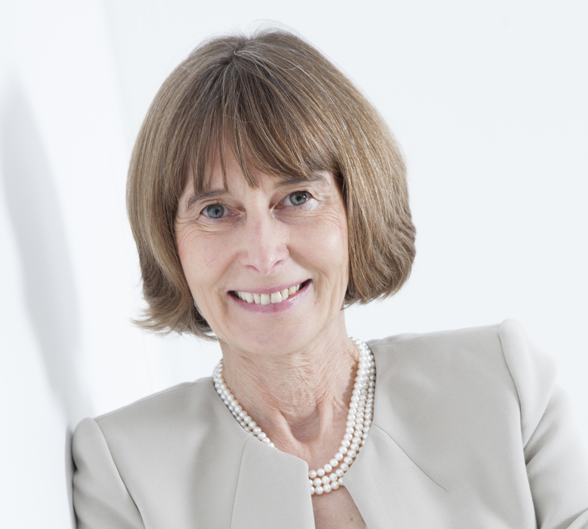

Safety Verification of Deep Neural Networks
By Marta Kwiatkowska
At the Alan Turing Institute, in the Enigma room (events room), on Friday 16th of June, at 2pm.

Summary
Deep neural networks have achieved impressive experimental results in image classification, but can surprisingly be unstable with respect to adversarial perturbations, that is, minimal changes to the input image that cause the network to misclassify it. With potential applications including perception modules and end-to-end controllers for self-driving cars, this raises concerns about their safety. Safety assurance of conventional software components is typically achieved using automated verification, but such methods are little studied for machine learning components. This lecture is based on a paper to appear in CAV 2017 and will focus on safety of image classification decisions defined in terms of invariance of the classification with respect to image manipulations within a small neighbourhood of the original image. The techniques have been implemented using Microsoft Z3, evaluated on state-of-the-art networks, including regularised and deep learning networks, and compared to existing tools to estimate network robustness with encouraging results.
Biography
Marta Kwiatkowska is Professor of Computing Systems and Fellow of Trinity College, University of Oxford. She led the development of the PRISM model checker (www.prismmodelchecker.org), the leading software tool in the area and winner of the HVC Award 2016. Applications of probabilistic model checking have spanned communication and security protocols, nanotechnology designs, power management, game theory, planning and systems biology, with genuine flaws found and corrected in real-world protocols. Kwiatkowska gave the Milner Lecture in 2012 in recognition of "excellent and original theoretical work which has a perceived significance for practical computing" and was awarded an honorary doctorate from KTH Royal Institute of Technology in Stockholm in 2014. Her research has been supported by the ERC
Advanced Grant VERIWARE "From software verification to everyware verification" and the EPSRC Programme Grant on Mobile Autonomy. She is a Fellow of ACM, Member of Academia Europea and Fellow of EATCS.
Professional webpage